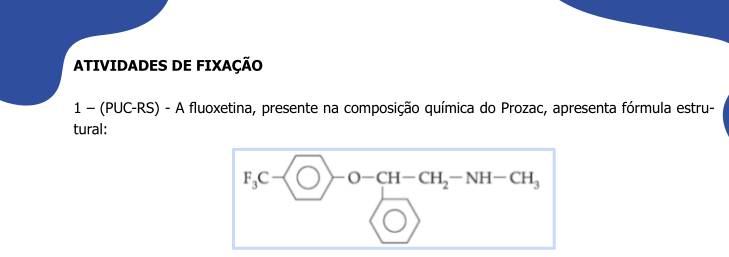

1. Botão direito no ecrã -> File -> Save -> Save as PNG/JMOL # por mouse
ou...
2. write nome_da_molecula.pngj # por linha de comando no Console4 - Como usar o Jmol
2 Salvamento do modelo no computador ou dispositivo móvel
Todas as ações realizadas com a molécula produzem um novo modelo que pode ser baixado para o computador. E isso é bem legal porque a molécula modificada (com alteração de cores, representações, animações, por ex) pode ser carregada no Jmol ou na JSmol (internet) como já mencionado. Para tanto, pode-se usar cliques de mouse ou linhas de comando, como segue:
Uma das características impressionantes com o Jmol é que salvando a molécula como PNG/JMOL, você poderá abrir o arquivo como uma imagem estática com um duplo clique, para apenas mostrar a molécula, ou arrastar o arquivo até a janela do Jmol mesmo no navegador, no que será carregada a estrutura tridimensional e interativa do modelo !!!
Agora é com voce:
- Carregue um modelo para “fenol” digitando no Console:
load $phenol - Salve o modelo digitando no Console: `write fenol.pngj
- Mude a orientação do modelo aleatoriamente com o mouse (só dar uma mexidinha);
- Localize o arquivo
fenol.pngjem seu computador; - Abra-o como uma figura normal, só pra testar;
- Agora arraste o arquivo para a a janela do Jmol online, e veja se o modelo substitui o anterior (basta conferir a orientação)
2.1 Alguns movimentos no Jmol
Para exemplificar algumas ações, usaremos inicialmente o modelo da vitamina C, carregando-o com o comando abaixo no Console.
load $ascorbate3 Movimentos com mouse
Para rotação e translação do modelo, bem como ampliação:
zoom - botão do meio do mouse; se não houver o botão, Shift+botão esquerdo;
rotação - botão esquerdo do mouse
translação - Ctrl+botão direito
rotação no eixo - Shift+botão direito4 Representações do modelo
As representações referem-se ao aspecto visual do modelo (renderização), ou seu estilo, Assim, o Jmol pode renderizar o modelo como vareta, arame, espaço preenchido, bola e vareta, traço, e desenho (tudo em inglês, claro - cpk, wireframe, trace, cartoon).
Experimente esses estilos, incluindo a opção
only. Essa opção permite que a ação não seja sobreposta às anteriores (no caso, a sobreposição das representações). Para isso, copie, cole, e execute em cada linha separada o trecho de código que segue no Console do Jmol, e cuja renderização ilustra a molécula de fluoxetina.

load $fluoxetine # carrega a molécula
wireframe only # estilo em arame
cpk only # espaço preenchido
cpk 20 only, bond 1 # bolas e varetas
cartoon only # representação de cartoon, mas que não ocorre com moléculas pequenas, apenas com biomacromoléculas (proteínas, ácidos nucleicos, por ex) Observe também que a representação em
cartoon não resulta numa renderização para o modelo da fluoxetina. Isso decorre porque a representação em cartoon é restrita para biopolímeros somente, ou seja, proteínas e ácidos nucleicos, e algumas associações supramoleculares. Contudo, se quiser experimentar o
cartoon, será necessário conhecer o código alfanumérico de uma proteína ou ácido nucleico. Exemplificando para a mioglobina, proteína transportadora de oxigênio em mamíferos (código: 1mcy)load=1mcy # carregando a mioglobina
# Obs: veja que a linha de comando pra biopolímeros é ligeiramente diferente da usada pra moléculas pequenas Observe que a renderização padrão para grandes moléculas é a de bolas e varetas, pouco didática para o aprendiz. Nesse caso, pode-se representá-la como desenho exclusivo, digitando-se:
cartoon only # renderizando em desenho Para se conseguir esse e outros códigos de proteínas e ácidos nucleicos, deve-se entrar no banco de dados do PDB - Protein Data Bank, RCSB, e digitar o nome no campo de busca (no caso,
myoglobin). O sistema retorna diversos modelos estruturais e seus códigos, bastando transcrever um desses códigos ao Console do JSmol. Se desejar observar um pouco mais sobre biomoléculas e o uso do Jmol, deixo-lhe um convite para visitar a área de Bioquímica portal.
5 Cores
Existe grande flexibilidade de cores para o Jmol (e, por consequência, para o JSmol), tanto para os modelos inteiros, partes do modelo (átomos específicos ou um conjunto), e plano de fundo. A visualização padrão de cores segue a convenção CPK (Corey–Pauling–Koltun). Exemplificando para o modelo anterior de vitamina C (
load $ascorbate), experimente a variação que segue, separadamente:color pink
color blue
color ligthgreen
background yellow # cor do plano de fundo O último comando da lista acima permite variar a coloração do plano de fundo.
Adicionalmente, também é possível a coloração de ligações entre os átomos, como segue:
color bonds LightSeaGreen Para um grande espectro de cores, você pode consultar a referência do Jmol Colors, ou um link mais “mastigado”, de nossa autoria junto ao aprendizado do programa ao ensino superior, na área de Bioquímica, mais especificamente, o tópico de cores para o Jmol.